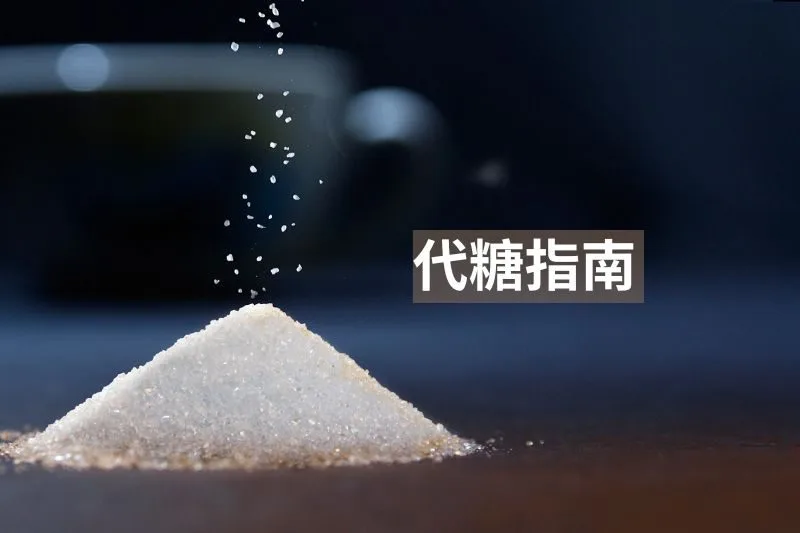

代糖的真相：種類、影響與選擇指南

代糖，顧名思義就是可以取代傳統糖的替代品，替代平時我們會吃到的蔗糖、葡萄糖、果糖等等。代糖通常含有很低的熱量，或是沒有熱量。人體從代糖感覺到的甜味強度通常都比平時會吃到的糖還要高。代糖是如何運作的呢?為什麼我們能夠從一個不是糖的東西上感覺到令人幸福的味道呢? 代糖分子可以完美的和甜味蕾受器結合，但是身體卻沒有辦法像分解糖份一樣去分解代糖，所以雖然感覺的到甜味，但是對身體來說是幾乎沒有熱量的（有些還是有）
代糖的原理就是讓大腦感知到有甜食進入身體，但是身體其實沒有真正吸收到糖分，所以是種欺騙身體的行為。如果吃太多的代糖，身體會認為該來的糖果一直都沒有進來，反而會迫使身體去吃進更多的熱量，這是我們不想要看到的。
代糖首先會激起一個生理反應，叫做Cephalic phase insulin response，胰島素頭期反應，當你「聞到」、「嚐到」甚至「想到」都會觸發身體一些神經傳導路徑，提前分泌胰島素，為待會會發生的一連串消化過程做「預備」。通常CPIR指的是「味覺」的部分，在舌頭嚐到「甜頭」之後，生理就會預期性的先分泌低劑量的「胰島素」。假設你吃的是不會提升血糖的代糖，那血中的糖分會因為CPIR分泌的胰島素而出現比飯前更低的血糖，然後使你的「飢餓感」更加深，於是你就會吃進更多食物。
在評估代糖的好壞，我會看三個面相，「是否升血糖」、「是否刺激胰島素」、「是否有其他副作用」
常見的代糖分成兩種，人工的和天然的。人工的有阿斯巴甜、糖精、紐甜、三氯蔗糖(俗稱蔗糖素)、三氯蔗糖Sucralose、乙醯磺胺酸鉀(簡稱Ace K)。天然的代糖有甜菊、羅漢果糖、菊苣纖維、赤藻醣醇、木糖醇、甘露醇、山梨醇、麥芽糖醇、阿洛酮糖。
人工代糖(artificial sweeteners)阿斯巴甜、糖精、紐甜、三氯蔗糖，不只對健康的傷害就像真正的糖，有些甚至更糟糕。大部分的代糖都被報導出有許多副作用，像是腸胃道副作用、頭痛、體重增加、傷害粒線體、破壞腸內菌平衡。原本認為人工甜味劑的發明可以大大降低肥胖的問題，但統計數據令人大吃一驚，幾乎所有研究都指向相反的結果，隨著人工代糖的使用越來越普及，肥胖人口的比例不減反增。WHO也不再建議使用人工代糖來減重。最令我擔心的是許多研究指出人工代糖的使用與癌症的風險有相關。
相較於人工代糖，天然的代糖似乎是對身體比較健康的選擇，也比較沒有上述的副作用。以下介紹四種我自己比較喜歡的天然代糖
赤藻糖醇Erythritol，市面上的各種低糖、生酮點心也是用這種代糖為主。赤藻糖醇屬於幾乎不含熱量的代糖(0.6大卡/公克)，甜度約為一般蔗糖的0.7倍，又能耐高溫，自然而然地成為低糖界的寵兒。赤藻醣醇本身也是一種抗氧化物，研究指出能夠改善體內的發炎狀況、改善血管內皮功能、降低糖化血色素，不會刺激胰島素分泌、甚至對胰島素阻抗有好處。但近年來有研究質疑赤藻醣醇會增加心血管疾病的風險，就目前我的看法，適量赤藻醣醇的攝取是安全的，但我會繼續觀察是否有更新的研究。
羅漢果糖，是從羅漢果果肉中萃取的甜味劑，是一種叫做羅漢果甜素” (mogroside)的物質，本身也是一種抗氧化物，僅佔整顆水果的1%。甜度是一般蔗糖的200倍。羅漢果糖是我非常喜歡的代糖，優點非常多，沒有熱量、抗氧化、抗發炎(NF-kb、IL-6、COX-2)，甚至降低飯後血糖的升幅、降低空腹血糖（老鼠）、改善糖尿病（增加GLP-1和修復beta細胞)，不會刺激胰島素分泌。羅漢果糖的甜味很接近蔗糖，沒有赤藻糖醇的清涼尾韻，是我最喜歡的代糖。
阿洛酮糖Allulose，雖然名字聽起來很加工，但其實是種天然的代糖，天然來源有玉米、葡萄乾、無花果、羅漢果，但是其中濃度非常稀少，甜度為一般蔗糖的0.7倍。和羅漢果糖一樣，不會升血糖，而且幾乎沒有熱量，還能改善胰島素阻抗、預防糖尿病，甚至能夠改善飯後血糖，降低胰島素上升的幅度，不會刺激胰島素的分泌。沒有人工代糖的副作用，像是破壞腸內菌平衡、增加體重等等。相反的，有研究指出攝取阿洛酮糖還有助於減重。因為會在小腸被完全吸收，所以幾乎不會有糖醇類代糖會造成的腸道副作用。在目前的研究中，持續服用適量阿洛酮糖12週也沒有出現明顯的副作用，即使在糖尿病患者身上。泌尿道感染的人可能要避免攝取，因為阿洛酮糖是由尿道排出體外。
甜菊糖Stevia，屬於甜菊科植物的葉子萃取物，甜度是一般這糖的200倍，也是微量使用就可達到所需甜度。Stevia本身有利尿的作用，也會少量刺激胰島素的分泌。即使會刺激胰島素分泌，仍然有研究指出，健康人和肥胖患者在甜菊糖的幫助下改善了胰島素和血糖水平，並且沒有因為攝取甜菊糖而造成過度進食的現象。也有研究指出甜菊糖本身能夠改善血脂數據，包括降低LDL、TG和提升HDL。安全性方面也是被FDA認可的，適量食用是不會有問題的，但如果攝取過多，恐怕就會有腸胃道副作用了。
阿拉伯糖Arabinose也是一種天然的代糖，主要從植物中提取，屬於五碳糖（Pentose）。它的甜度約為蔗糖的30% 到 50%，本身幾乎不被人體吸收代謝，因此熱量極低。阿拉伯糖最獨特的地方在於它能夠抑制蔗糖酶（Sucrase）的活性，減緩蔗糖分解為葡萄糖和果糖的速度，進而減少血糖的劇烈波動，對於糖尿病患者或需要控制血糖的人來說是一個很有價值的選擇。由於它不會明顯刺激胰島素分泌，且能夠減少蔗糖對血糖的影響，因此在控糖飲食中有一定的應用。不過，過量攝取可能會引起腸胃不適，如脹氣或輕微腹瀉，因此建議從小量開始食用。
總結一下，代糖可以區分為人工代糖和天然代糖，比較不推薦人工代糖，因為副作用多且沒有減重的好處。天然代糖是可以考慮的，簡單介紹了一下四種我最喜歡的天然代糖，但是即使使用天然代糖，也應該酌量使用，要是無限制的攝取也是會對健康造成傷害的。
 空腹小雞跟思思醫師一起斷食，順便養一隻小雞來養小雞 →
空腹小雞跟思思醫師一起斷食，順便養一隻小雞來養小雞 →
好朋友週信
每週五一封：《健康駭客週報》這集的研究重點，加上家醫專欄這週的新文章。免費，隨時可以退訂。
延伸閱讀

游離脂肪酸如何影響胰島素敏感性
血中游離脂肪酸過高會抑制葡萄糖攝取與胰島素訊號，導致胰島素阻抗，應透過減少內臟脂肪與運動來改善。

腸道菌群如何影響胰島素阻抗？
腸道菌群產生的短鏈脂肪酸能促進GLP-1分泌與胰島素作用，透過增加纖維攝取與運動可改善胰島素阻抗。

每天兩餐 vs. 六餐：哪種更健康？
將進食時間限制於12小時內可提升胰島素敏感性，與少量多餐相比，低頻率進食對血糖控制可能更有效。